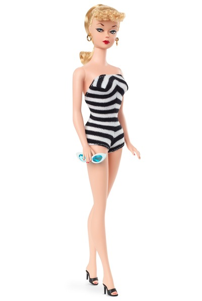
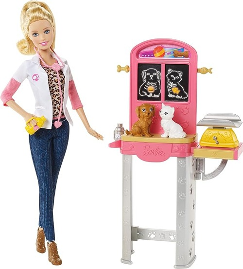

Barbie is a world famous doll. When the product first came out it was revolutionary. She was the first toy doll that wasn't a baby. Before her, little girls only played "mother." This doll allowed little girls to dream big.
As Barbie became bigger, she expanded into many different professions. She became not only an a toy but a role model. She didn't deny her femininity to prove herself. She did everything she wanted and was kind and feminine and powerful the whole time.
 | --Barbie Colors-- | --Barbie Media-- | --Barbie Professions-- |
|---|---|---|
| Pink | TV Shows | Veteranarian |
| Black | Movies | Fashion Designer |
| Whtie | YouTube | Chef |